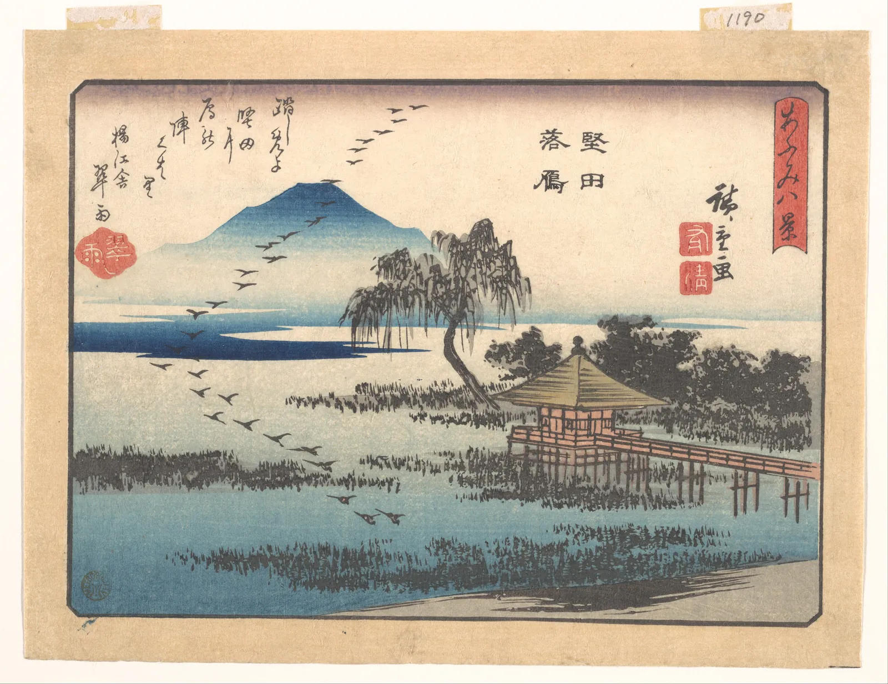

묶여 보이는 법칙
밤하늘의 별은 제각각 흩어져 있는데 우리는 그 가운데 몇 개를 이어 국자 모양을 본다. 가게 앞에 늘어선 사람들은 따로따로 서 있지만 한 줄로 읽히고, 하늘을 나는 기러기 떼는 점 수십 개가 아니라 한 마리의 큰 새처럼 움직인다. 눈은 낱낱의 요소를 하나씩 세지 않는다. 가까운 것, 닮은 것, 이어지는 것, 함께 움직이는 것을 먼저 한 무리로 묶는다. 이 장은 그 묶음의 규칙들을 점을 끌고, 간격을 벌리고, 움직여 보며 확인한다. 그리고 그 규칙이 어디까지 믿을 만한지도 함께 따진다.
- 근접, 유사, 연속, 폐합, 공통 운명, 좋은 형태의 여섯 원리를 조작 가능한 그림으로 확인한다.
- 두 원리가 맞설 때(가까움 대 닮음) 무엇이 묶음을 정하는지, 간격의 비율로 따져 본다.
- 베르트하이머(1923)와 베를린 학파에서 시작된 게슈탈트 심리학의 역사와, 뒤에 더해진 원리(공통 영역, 연결)를 안다.
- 게슈탈트 원리가 정량적인 법칙이 아니라 경향의 기술이라는 한계를 이해한다.
- 무리 안 간격과 무리 사이 간격의 규칙으로 웹 첫 화면을 다시 묶는다.
흩어진 것이 하나로 보일 때
"게슈탈트"는 독일어로 형태, 모양, 짜임새 전체를 뜻하는 말이다. 20세기 초 독일의 심리학자들은 사람이 세상을 낱낱의 감각을 모아 조립하는 것이 아니라 처음부터 짜임새 있는 전체로 본다고 주장했고, 그 생각을 게슈탈트 심리학(Gestalt psychology)이라고 부른다. 흩어진 요소들이 하나의 무리로 보이는 현상을 지각적 무리 짓기(Perceptual grouping)라고 하고, 어떤 요소들이 함께 묶이는지에 대한 경험적인 규칙들을 흔히 게슈탈트 원리(Gestalt principles)라고 부른다.
가장 기본은 근접(Proximity)이다. 다른 조건이 같다면 서로 가까운 요소들이 한 무리로 보인다. 아래 화면의 점을 끌어 옮겨 본다. 둥근 색 띠는 이 장의 단순한 모형이 "같은 무리"라고 판단한 범위다. 모형은 화면에서 가장 좁은 간격을 기준으로, 그 간격의 몇 배 안에 있는 점들을 사슬처럼 이어 한 무리로 친다.
가까움: 점을 끌어 무리 만들기
"세 무리"처럼 무리 사이 간격이 무리 안 간격보다 충분히 크면 모형의 기준을 어디에 두어도 결과가 같다. 묶음이 흔들리는 것은 간격의 차이가 애매할 때다. 그래서 디자인에서 근접을 쓸 때는 간격의 절대값보다 무리 안 간격과 무리 사이 간격의 비율을 생각한다. 이 비율은 이 장의 마지막 시뮬레이터에서 다시 쓴다.
베르트하이머의 점들
게슈탈트 심리학의 출발점으로 흔히 꼽는 것은 체코 프라하 태생의 독일 심리학자 막스 베르트하이머(Max Wertheimer)가 1912년에 낸 움직임 지각 연구다. 두 불빛을 알맞은 간격으로 번갈아 켜면 사람은 두 개의 깜박임이 아니라 한 불빛이 오가는 움직임을 본다. 베르트하이머는 이 겉보기 움직임이 낱낱의 감각을 더해서는 설명되지 않는다고 보았다. 그와 함께 일한 볼프강 쾰러(Wolfgang Köhler), 쿠르트 코프카(Kurt Koffka)가 이 생각을 넓혀, 베를린 대학을 중심으로 이른바 베를린 학파를 이루었다.
이 장의 원리들을 처음 체계적으로 정리한 글은 베르트하이머가 1923년 『심리학 연구』(Psychologische Forschung)에 발표한 「게슈탈트 이론 연구 II」(Untersuchungen zur Lehre von der Gestalt II)다. 그는 점과 선을 줄지어 놓은 단순한 그림들을 보여 주며, 가까움, 닮음, 같은 방향으로 움직임(공통 운명), 매끄러운 이어짐, 닫힘 같은 요인이 무엇이 함께 묶이는지를 정한다고 설명했다. 그림 1의 점 줄은 그런 그림들을 이 책이 새로 그린 것이다. 코프카는 뒤에 쓴 『게슈탈트 심리학의 원리』(Principles of Gestalt Psychology, 1935)에서 흔히 "전체는 부분의 합보다 크다"로 알려진 말을 바로잡아, 전체는 부분의 합과 다른 무엇이라고 말하는 편이 정확하다는 취지로 썼다. 더 많다는 것이 아니라 짜임새가 생긴다는 뜻이다.
1930년대 나치 정권이 들어서자 베르트하이머는 1933년 미국으로 건너갔고, 쾰러도 1935년 독일을 떠났다(코프카는 그보다 앞서 1927년부터 미국에서 가르치고 있었다). 학파는 흩어졌지만 그들이 정리한 원리는 미술 교육과 디자인 교과서에 깊이 스며들었다. 미국의 미술 이론가 루돌프 아른하임(Rudolf Arnheim)의 『미술과 시지각』(Art and Visual Perception, 1954)이 그 다리 노릇을 한 대표적인 책이다.
가까움과 닮음의 줄다리기
두 번째 원리는 유사(Similarity)다. 색, 모양, 크기, 방향, 질감이 닮은 요소끼리 한 무리로 보인다. 그림 1의 ②에서는 간격이 모두 같은데 색이 같은 점끼리 세로 줄을 이룬다. 그렇다면 가까움과 닮음이 서로 다른 방향을 가리키면 어떻게 될까. 아래 격자에서 가까움은 슬라이더 하나로, 닮음은 다른 슬라이더로 조절한다. 닮음은 늘 가로 줄을 묶도록(한 줄 걸러 다르게) 칠했다.
가까움 대 닮음: 줄인가 열인가
여기서 얻는 교훈은 단순하다. 무리를 확실히 만들고 싶으면 원리들이 같은 방향을 가리키게 한다. 같은 무리는 가깝게, 그리고 닮게. 다른 무리는 멀게, 그리고 다르게. 두 원리를 맞서게 하면 보는 사람마다, 화면 크기마다 다르게 읽힌다. 거꾸로 일부러 긴장을 주고 싶을 때는 그 맞섬을 쓸 수도 있다. 가까이 붙어 있지만 하나만 다른 색인 요소는 강하게 눈에 띈다. 이 "튀는 하나"는 8장에서 리듬을 깨는 한 점으로 다시 만난다.
선은 매끄럽게 이어진다
세 번째 원리는 연속(Continuity, Good continuation)이다. 점이나 선분이 매끄러운 선 위에 놓여 있으면 그 선을 따라 하나로 이어져 보인다. 두 선이 엇갈리는 자리에서 눈은 방향이 급하게 꺾이는 해석보다 방향이 그대로 이어지는 해석을 고른다. 그림 1의 ③은 매끄러운 두 곡선이 엇갈린 것으로 보이지, 꼭짓점을 맞댄 V자 두 개로는 잘 보이지 않는다. 아래에서 두 곡선의 점들을 끌어 엇갈리는 각도를 바꿔 본다.
연속: 엇갈린 두 곡선, 맞닿은 두 V
연속은 화면 위에서 눈의 길을 만든다. 늘어선 나무, 강가의 길, 인물의 팔과 시선이 매끄럽게 이어지면 눈은 그 선을 따라간다. 시선의 흐름은 5장에서 따로 다루고, 여기서는 연속이 낱낱의 요소를 하나의 선으로 묶는다는 점만 본다. 동아시아 판화는 이 원리를 아주 경제적으로 썼다.

닫힌 모양과 보이지 않는 선
네 번째 원리는 폐합(Closure)이다. 선이 군데군데 끊겨 있어도 눈은 그 선들이 감싸는 닫힌 모양을 본다. 끊긴 원은 "선분 여덟 개"가 아니라 "원"으로 읽힌다. 이 원리를 극단까지 밀면 아무것도 그려지지 않은 자리에 윤곽이 생긴다. 이탈리아의 가에타노 카니자(Gaetano Kanizsa)가 1955년에 발표한 그림, 흔히 카니자 삼각형(Kanizsa triangle)이라고 부르는 그림이 대표적이다. 한쪽이 파인 원 세 개를 놓으면, 그 가운데에 그려지지 않은 흰 삼각형이 바탕보다 더 밝게, 원들 위에 올라앉은 것처럼 보인다. 이런 윤곽을 착시 윤곽(Illusory contour)이라고 한다.
폐합: 끊긴 원과 카니자 삼각형
착시 삼각형이 바탕보다 밝아 보이는 것은 실제 밝기 차이가 없는데도 일어난다. 눈이 "가운데에 흰 물체가 원들을 가리고 있다"고 해석하면서 그 물체에 윤곽과 밝기를 덧칠하는 것이다. 미국의 토머스 시플리(Thomas F. Shipley)와 필립 켈먼(Philip J. Kellman)은 1992년, 착시 윤곽의 세기가 윤곽 가운데 실제로 그려진 부분의 비율과 함께 커진다고 보고했다. 디자인에서는 폐합 덕분에 선을 다 긋지 않아도 된다. 아이콘의 끊긴 테두리, 글자의 일부를 생략한 표지 디자인, 몇 획으로 그린 얼굴이 모두 보는 사람의 눈이 나머지를 채우리라는 믿음 위에 서 있다. 다만 남긴 조각이 너무 적거나 흩어져 있으면 그 믿음은 깨진다.
함께 움직이는 것은 한 무리
다섯 번째 원리 공통 운명(Common fate)은 움직임에 관한 것이다. 같은 방향, 같은 속도로 함께 움직이는 요소들은 한 무리로 보인다. 정지한 화면에서는 아무 무리도 보이지 않다가, 일부가 함께 움직이기 시작하면 그 순간 모양이 튀어나온다. 아래 화면에는 똑같이 생긴 점이 70개 있다. 그 가운데 몇 개는 어떤 모양을 이루고 있지만, 멈춰 있을 때는 찾기 어렵다.
공통 운명: 함께 움직일 때 나타나는 모양
공통 운명은 정지한 그림에도 흔적을 남긴다. 그림 2의 기러기들처럼 같은 쪽을 향한 몸짓, 바람에 한쪽으로 쏠린 풀잎과 대나무 잎, 같은 방향으로 기운 군중은 정지된 화면에서도 "함께 움직이는 중"으로 읽혀 한 무리가 된다. 화면 디자인에서는 실제 움직임으로 쓴다. 메뉴를 펼칠 때 하위 항목들이 함께 미끄러져 나오면 그것들이 한 무리라는 것이 설명 없이 전해진다. 반대로 한 무리의 요소가 제각각 다른 타이밍으로 움직이면 무리가 흩어져 보인다.
가까움보다 센 묶음: 상자와 선
앞의 깊이 읽기에서 본 파머의 두 원리는 화면 디자인에서 가장 자주, 그리고 가장 강하게 쓰인다. 같은 테두리나 바탕 상자 안에 든 요소들은 한 무리로 보이고(공통 영역), 선으로 이어진 요소들도 한 무리로 보인다(연결성). 둘 다 가까움을 쉽게 이긴다. 아래 점 여덟 개는 둘씩 가깝게 짝지어 있다. 상자나 선을 가까움과 엇갈리게 놓아 본다.
공통 영역과 연결: 가까움을 이기는 묶음
웹 화면의 카드, 표의 줄무늬, 지도의 행정 구역 색이 모두 공통 영역이다. 상자가 이렇게 강하기 때문에 남용도 쉽다. 모든 것을 상자에 넣으면 상자끼리 다시 무리를 이루지 못해 화면이 칸막이 사무실처럼 된다. 간격만으로 무리가 서는 곳에서는 상자를 빼고, 간격으로 부족할 때만 상자를 더하는 것이 흔한 순서다.
좋은 형태, 그리고 법칙의 한계
여러 원리를 아우르는 말로 게슈탈트 심리학자들은 프레그난츠(Prägnanz, 좋은 형태의 법칙)를 들었다. 같은 자극을 여러 방식으로 볼 수 있을 때 눈은 가장 단순하고, 규칙적이고, 안정된 짜임새를 고른다는 것이다. 그림 3은 그 예다.
이제 이 장의 원리들이 어디까지 믿을 만한지 따질 차례다. 게슈탈트 원리는 "이런 조건에서는 이렇게 묶여 보이는 경향이 있다"는 기술이다. 물리 법칙처럼 "간격이 몇 배면 반드시 갈린다"고 예측하는 수식이 아니다. 후대의 연구자들은 근접처럼 일부 원리의 세기를 실험으로 재어 보기도 했지만, 그 값은 요소의 크기, 개수, 배치, 보는 시간에 따라 달라진다. 앞의 시뮬레이터들이 "어느 쪽이 이기는지는 계산하지 않았다"고 적은 이유다.
첫 화면 다시 묶기
마지막 시뮬레이터는 이 장의 원리를 가상의 서점 웹사이트 첫 화면에 모은다. 첫 화면에는 세 무리가 있어야 한다. 위쪽의 로고와 메뉴, 가운데의 이번 주 행사(제목과 카드 둘), 아래쪽의 새로 들어온 책(제목과 표지 넷). 슬라이더로 무리 안 간격과 무리 사이 간격을 정하고, 닮음(같은 무리는 같은 모양·색)과 공통 영역(무리마다 바탕 상자)을 켜고 끈다. 점선 테두리는 앞에서 쓴 가까움 모형이 이 화면을 몇 무리로 보는지 보여 준다.
책방 E 첫 화면: 세 무리로 묶기
간격만 바꿨는데 같은 요소들이 한 덩어리가 되기도 하고 세 무리가 되기도 한다. 바탕 상자는 간격이 부족할 때 무리를 세우는 강한 도구이지만, 간격이 이미 무리를 세웠다면 덧붙일 필요가 적다. 여기서 정한 무리와 간격은 아직 "묶음"의 단계다. 무리들 사이의 위계(무엇을 먼저 크게 보일지)와 정렬은 12장에서 지면 전체의 구성으로 이어 간다.
서윤의 겨울 작업 노트
메뉴와 행사와 신간이 한 덩어리였다
12월 둘째 주, 책방 E 주인이 휴대폰으로 새 웹사이트 첫 화면 시안을 넘겨 보다 물었다. "낭독회 안내가 어디 있죠?" 낭독회 카드는 메뉴 바로 아래에 있었다. 서윤이 시안을 흑백 썸네일로 줄여 보니 이유가 보였다. 로고와 메뉴, 행사 제목과 카드, 신간 제목과 표지 사이의 간격이 모두 16 px로 같았다. 무리 안 간격과 무리 사이 간격이 같으니 화면은 위에서 아래로 고르게 이어진 한 덩어리였다. 이 장의 가까움 모형(가장 좁은 간격의 2배 안이면 같은 무리)으로도 무리는 하나였다. 게다가 두 행사 카드는 하나는 크림 바탕, 하나는 흰 바탕에 테두리여서 닮음마저 둘을 갈라 놓고 있었다.
한도경은 화면을 들여다보더니 엉뚱하게 화실 벽 이야기를 꺼냈다. "습작을 벽에 핀으로 꽂을 때도 한 연작끼리는 붙이고, 연작과 연작 사이는 한 뼘씩 띄우잖아. 같은 거야." 서윤은 세 무리를 먼저 정했다. ① 로고와 메뉴, ② 이번 주 행사(제목과 카드 둘), ③ 새로 들어온 책(제목과 표지 넷). 그다음 간격 규칙을 정했다. 무리 안 간격은 12 px, 무리 사이 간격은 40 px로, 비율이 약 3.3이다. 모형이 세 무리를 찾는 문턱은 비율 2(무리 사이 24 px 초과)지만, 휴대폰에서 카드가 세로로 쌓이고 글자가 커질 때를 생각해 넉넉히 3배 이상으로 잡았다. 닮음도 맞췄다. 두 행사 카드는 같은 크림 바탕(#ffe2d7)에 같은 책방 초록(#2f7d5b) 띠를 두르고, 표지 넷은 같은 크기와 그림자로 맞췄다. 바탕 상자는 쓰지 않았다. 간격과 닮음만으로 세 무리가 섰기 때문이다.
고친 시안을 본 주인은 이번에는 묻지 않고 바로 낭독회 카드를 눌렀다. 서윤은 회사 디자인 시스템에서 쓰던 "간격 단계" 이야기를 도경에게 들려주었고, 도경은 그것을 손 색 일지에 "4, 8, 12 … 하지만 무리 사이는 한 걸음이 아니라 세 걸음"이라고 적었다. 서윤은 이것이 아직 "묶기"일 뿐이라는 것도 적어 두었다. 세 무리 가운데 무엇을 먼저 보이게 할지는 정하지 않았다.
#ffe2d7
행사 카드 띠(같게)#2f7d5b
메뉴 글자#22342a
핵심 정리
- 눈은 낱낱의 요소를 세기 전에 무리로 묶는다(지각적 무리 짓기). 게슈탈트 원리는 근접, 유사, 연속, 폐합, 공통 운명, 좋은 형태(프레그난츠)로 그 경향을 정리한 것이다.
- 근접에서 중요한 것은 간격의 절대값이 아니라 무리 안 간격과 무리 사이 간격의 비율이다. 차이가 애매하면 묶음이 흔들리고 사람마다 다르게 본다.
- 원리끼리 맞서면(가까움 대 닮음) 결과는 상대적 세기에 달려 있고 정해진 답이 없다. 무리를 확실히 하려면 원리들이 같은 방향을 가리키게 한다.
- 연속은 매끄럽게 이어지는 해석을, 폐합은 닫힌 모양을 고르게 한다. 카니자 삼각형처럼 그려지지 않은 윤곽도 배치만으로 생긴다.
- 베르트하이머(1923)가 정리한 원리에 파머의 공통 영역(1992)과 연결성(1994)이 더해졌다. 상자와 선은 가까움을 쉽게 이기지만 남용하면 화면이 칸막이처럼 된다.
- 게슈탈트 원리는 수식이 아니라 경향의 기술이다. 화면이 왜 그렇게 보이는지 설명하는 데 쓰고, 쓰기 좋은지는 실제 사람에게 확인한다.
확인 퀴즈
1. 같은 색, 같은 크기의 점을 6×6 격자로 놓되 가로 간격을 세로 간격의 두 배로 했다. 가장 그럴듯하게 보이는 모습은?
2. 똑같이 생긴 점 70개가 흩어진 화면에서, 멈춰 있을 때는 아무 모양도 보이지 않다가 그 가운데 14개가 같은 방향으로 함께 오가기 시작하자 고리 모양이 나타났다. 이 현상을 가장 잘 설명하는 원리는?
3. 한쪽이 파인 원 세 개만 그렸는데, 그 가운데에 그려지지 않은 흰 삼각형이 바탕보다 밝게 보인다. 이에 대한 설명으로 가장 알맞은 것은?
4. 웹 첫 화면의 모든 간격이 16 px로 같아 한 덩어리로 보인다. 이 장의 가까움 모형(가장 좁은 간격의 2배 안이면 같은 무리)으로 세 무리를 확실히 가르려면 어떻게 고치는 것이 가장 알맞은가?